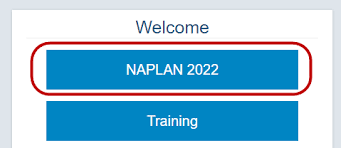

On the 29th of April, 2022, Tao He (Co-Founder) went to the swimming State Championships, which were held in Victoria, and came 1st place in the 9-10 age group for butterfly! Therefore, he is officially the first person on the Jamex Hall of Fame.
Everyone who gets a place on the Hall is entitled to a position at Jamex, and if he/she is already employed, they gets the honour of employing anyone of their choice.
To start the tradition, Tao He has recruited Lakshman Sundaralingam to join the pack. Good job, Tao!

During NAPLAN, it was impossible to exit the locked-down browser while waiting for the NAPLAN test to begin. However, Ethan Moroney found a way! Therefore, he is also automatically an official employee of Jamex, because he didn't have a position before! This is how Ethan got out of it:
Excellent work, Ethan!